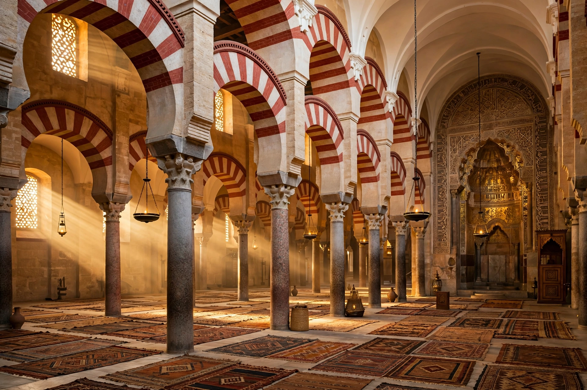

The Caliphate of Córdoba (Arabic: خلافة قرطبة) was an Islamic state in the Iberian Peninsula ruled by the Umayyad dynasty from 929 to 1031. It succeeded the Emirate of Córdoba (756–929) when Abd al-Rahman III proclaimed himself caliph. Its capital Córdoba was one of the largest and most cultured cities in Europe and the Mediterranean world.

| Caliphate of Córdoba | |
|---|---|
| Capital | Córdoba |
| Period | 929–1031 |
| First caliph | Abd al-Rahman III |
| Languages | Arabic, Mozarabic, Berber |
Under Abd al-Rahman III and his son al-Hakam II, the caliphate reached its zenith, with a great library, flourishing scholarship, and the palace-city of Madinat al-Zahra. Under the de facto ruler Almanzor (al-Mansur), armies campaigned deep into Christian Iberia. After Almanzor's death in 1002, factional civil war (the Fitna of al-Andalus) fragmented the state, which was abolished in 1031 and split into taifa kingdoms.
Al-Andalus under the caliphate was noted for religious coexistence (though with dhimmi restrictions), advances in medicine, astronomy, agriculture and philosophy, and patrons such as Hasdai ibn Shaprut.